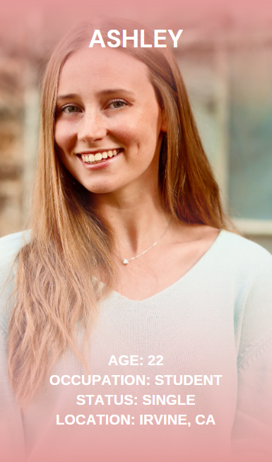

Biography
Ashley is a fourth year Computer Science major at UCI. She has had 2 prior internships at X and Y company. She is graduating in June 2025 at the top of her class, and is actively looking for employment opportunities. She is passionate about improving education, so she hopes to find a job in Edtech. She is on all the job-seeking apps including LinkedIn. She checks LinkedIn every few weeks and feels discouraged because she has not been able to find a job through the app. She feels confident in her abilities and hopes to find a job as soon as possible.
Frustrations
- Dislikes the limit on how many people they can message
- Annoyed with scam-like job recommendations
- Wishes for more personalized job recommendations
Goals
- Learn more about job requirements in her field
- Gain more job interviews
- Gain more experience in her field
- Secure a job
App: Linkedin
Scribe: Sasha Yeskel
Designer: Mykaela Ly
Reporter: Jackson Calvert
Interviewer: Jony Huerta
Recruiter: Shreya Shyam
Motivations
- Wants to transition from college to the workforce smoothly, by not being unemployed for too long
- Wants to get a job that aligns with her passion
- Build her network and connect with more people
Quotes
“[Linkedin] is good if you want to see what the job market is like, especially experience wise, like, what the main requirements are because most of these roles require a similar experience and similar skill set…”